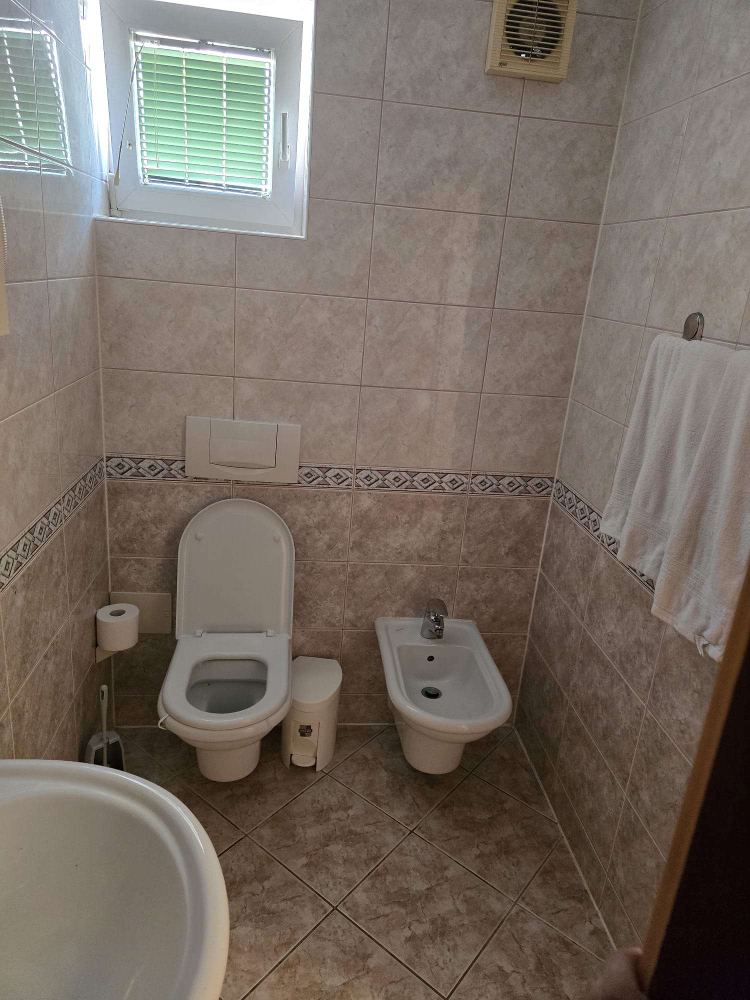
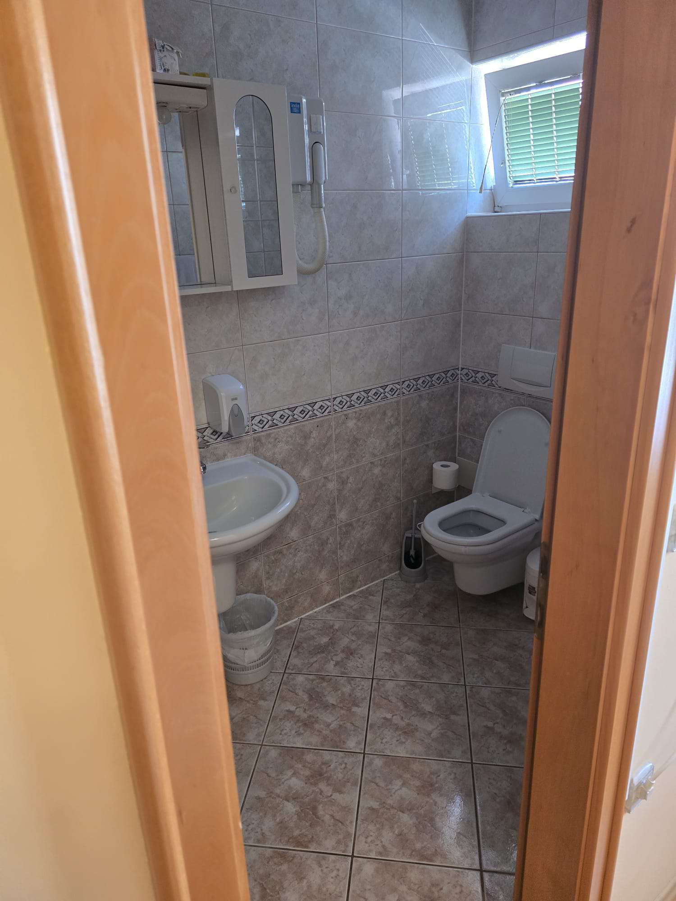
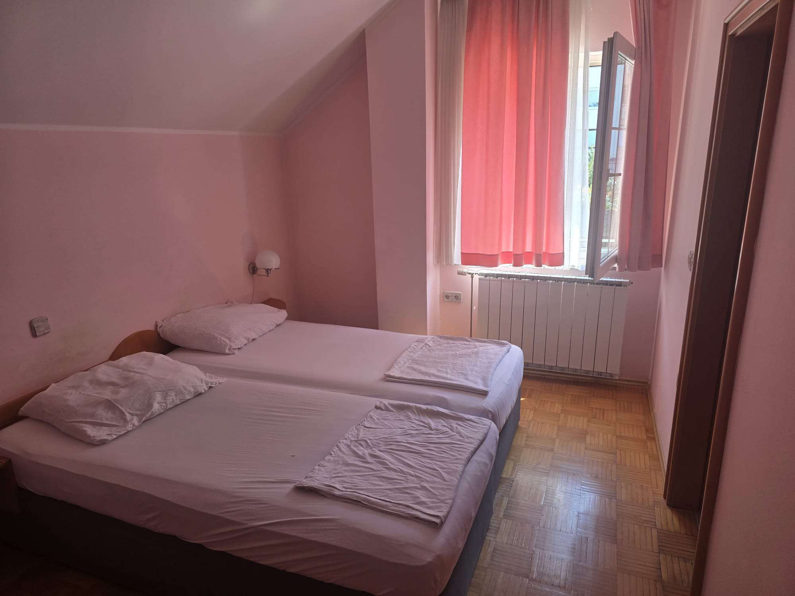
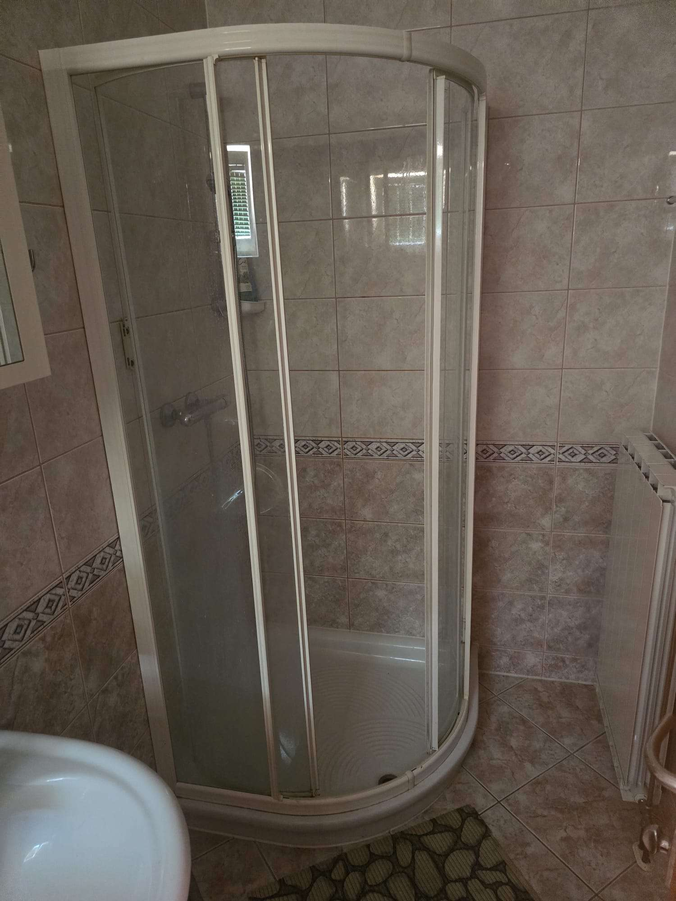
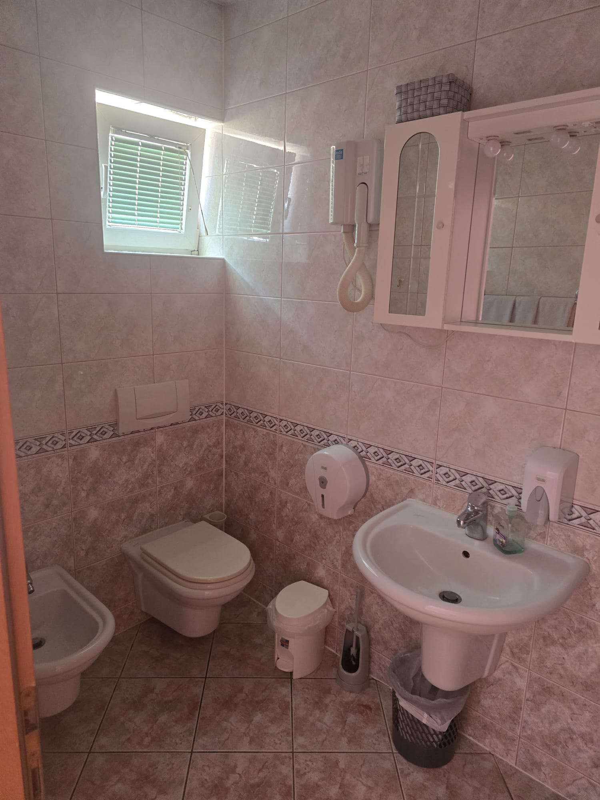
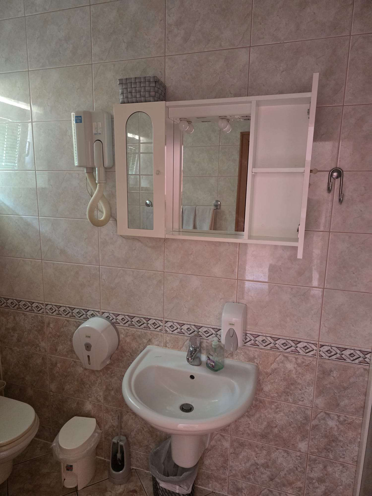

Sobe in apartmaji
Pri Gostišču Kužner pri Makedonki imamo na voljo dva apartmaja za goste, ki si želijo prenočiti v Studencih. Do sob vodi ločen vhod z napisom "Prenočišča", recepcija pa je odprta vsak dan od 7.00 do 20.00.
Apartma 1
Svetla soba z dvema posteljama z lesenim vzglavjem in nočnima omaricama z bralnima lučkama. V sobi je tudi manjša okrogla mizica s stoli, parketna tla in omara z ogledalom pri vhodu. Lastna kopalnica ima prho s steklenimi vrati, umivalnik z ogledalno omarico in sušilnik za lase, straniščno školjko in bide.





Apartma 2
Druga soba ima prav tako dve postelji, svetle stene in veliko dnevne svetlobe skozi okno z zavesami. Lastna kopalnica ima tuš kabino, umivalnik z ogledalno omarico in sušilnikom za lase ter straniščno školjko z bidejem.




Rezervacije
Za rezervacijo ali dodatna vprašanja o sobah nas pokličite na spodnjo številko.
Pokliči: 069 909 019